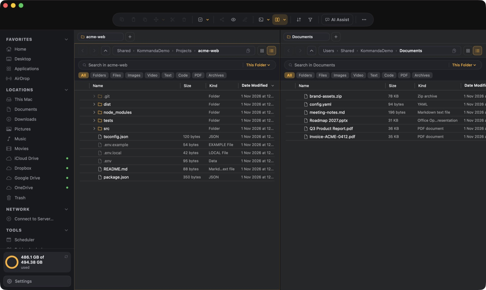
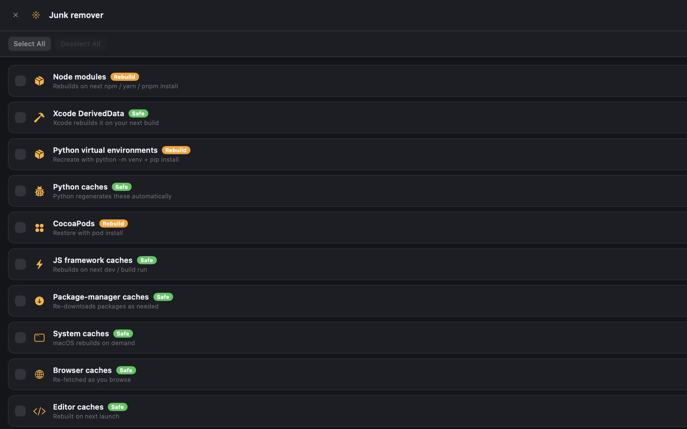
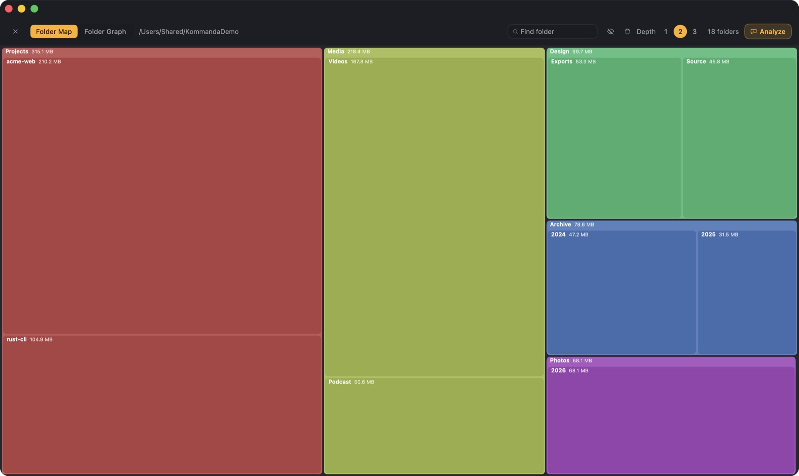
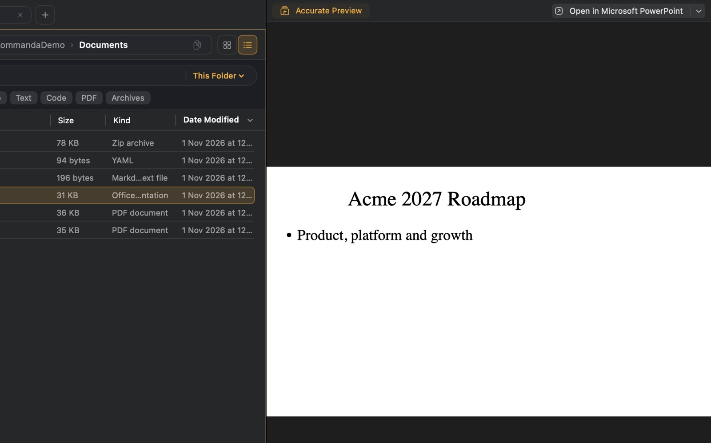
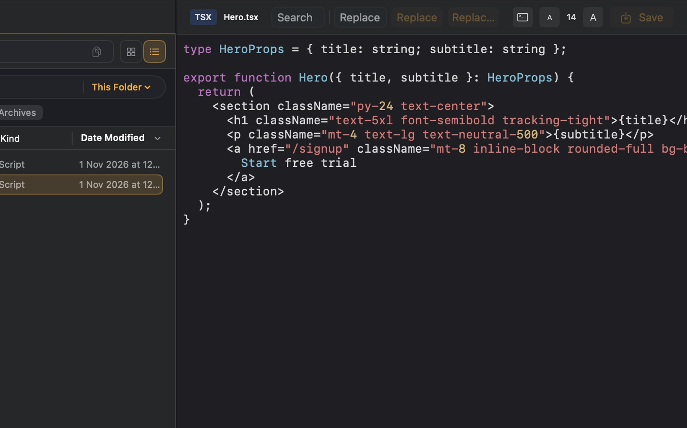
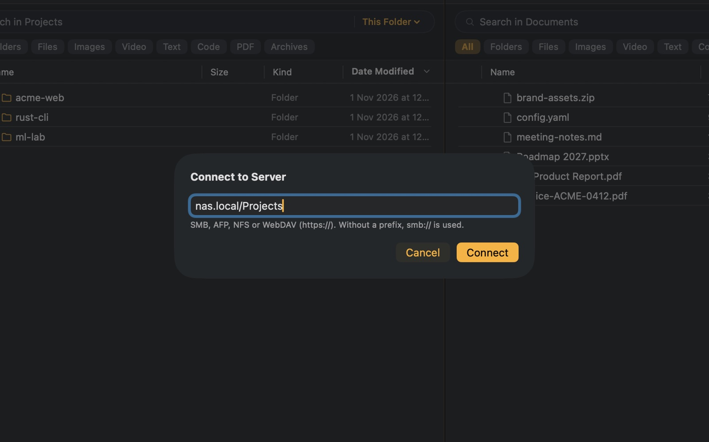
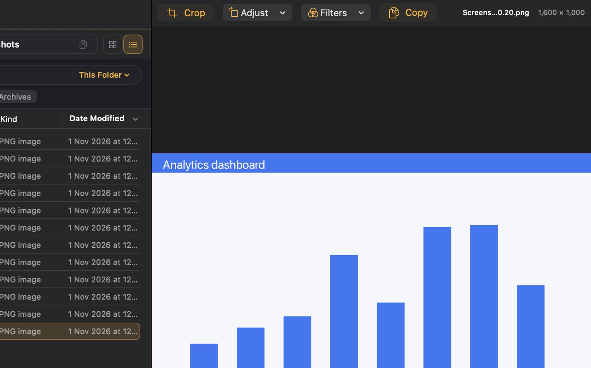
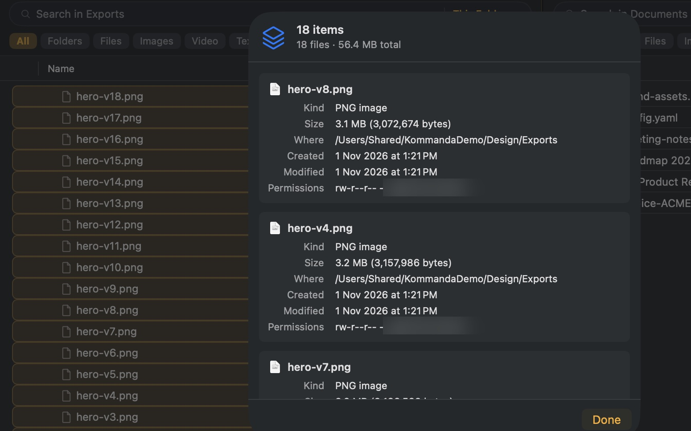

Two panes, real previews and a terminal for everyday file work — and it knows node_modules from your source. Copy a project without the junk, find the gigabytes your builds left behind, and clean up without ever touching your work.
Real features, real numbers — try them on your own folders.
See it work
Every picture below is a real Kommanda 2.27 window — no mockups, no retouching beyond hiding a username.

Move work between folders without juggling Finder windows. F5 copies, F6 moves, Tab switches sides.

Every category says how it regenerates — “Safe” comes back on its own, “Rebuild” after an install. Your picks go to the Trash.

Folder Map sizes every folder at a glance, so the one eating the space stands out.

One click renders a deck exactly through Keynote or PowerPoint — instead of Quick Look's guess.

Syntax highlighting for dozens of languages, with search and replace right in the preview.

Connect to SMB, AFP, NFS and WebDAV servers with ⇧⌘K. Shares stay in the sidebar until you disconnect.

Crop, rotate, filter, or copy the picture straight into a chat — without opening another app.

One window, every file, and a total — not eighteen Finder windows.
How it treats your files
A file manager that deletes things has to earn trust. These are rules the app keeps — and one it breaks counts as a bug.
Every delete and every cleanup goes to the Trash. Change your mind tomorrow.
Cleanup touches regenerable folders — node_modules, caches, build output. Never your source.
Removals list exactly what was found, with sizes. The assistant shows its plan before it acts.
No account. AI uses your own key — or a local Ollama model, so nothing leaves your Mac.
Why Kommanda
Right-click a project: copy it without node_modules and .env, or trash just the rebuildable parts.
F5 copies, F6 moves, F7 makes a folder, Tab switches sides. Tabs in each pane with Pro.
Code, PDFs, images, archives, and PowerPoint decks rendered exactly — not Quick Look's guess.
Connect to SMB, AFP, NFS and WebDAV servers, browse iCloud and every cloud drive, send with AirDrop.
Reclaim Space and Folder Analysis show where your disk went — and what's safe to give back.
Rename by content, organize, convert, run a script — planned, shown, and confirmed first.
Reclaim Space
Old DerivedData, forgotten node_modules, Python virtualenvs, package and model caches. Kommanda only lists folders that rebuild themselves, says how each one comes back, and moves your picks to the Trash.
Pricing
Free is the file manager. Pro is the cleanup crew and the assistant. Every Pro feature is yours for the first 14 days — no card.
Questions
Yes. The Free version keeps working forever — the file manager, previews, terminal, network and cloud drives, and Copy Without / Remove for project folders. Your first 14 days include every Pro feature, no card needed.
It only lists folders that rebuild themselves (node_modules, caches, build output), labels how each comes back, and moves your picks to the Trash — so even a mistake is one drag away from undone. .git and .env.example are never touched by the quick Remove.
No account, no file uploads. AI uses your own OpenAI or Gemini key — or a local Ollama model, so nothing leaves at all. Read the privacy details →
No. It shows what it understood and the exact actions, and waits for you to apply, review each step, or cancel.
macOS 14.6 or later, Apple Silicon and Intel. Signed and notarized by Apple; updates arrive inside the app.
Free to download, free forever, and Pro for 14 days on us.